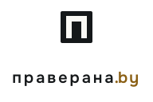

Бренд-бук
Праверана.by — локальный аудит проектной документации по ТНПА Республики Беларусь. Здесь всё, что нужно, чтобы делать страницы, документы и письма в одном характере: знак, логотип, слоган, палитра, типографика, компоненты и запреты.
Основа — цвета государственной символики и ромб рушникового орнамента. Государственный герб не воспроизводится: его использование регулируется законодательством.
1. Знак
Ромб — основа белорусского орнамента; внутри галочка: «праверана» значит «проверено». Знак читается и как печать, и как узел вышивки.
Построение
- Внешний ромб — квадрат, повёрнутый на 45°, поле 64 × 64.
- Внутренний ромб — 80 % внешнего, цвет бумаги.
- Галочка — золото #A97C22, толщина 4,6 при поле 64.
- В одном макете — один знак. Не обводить, не добавлять тень и объём.
Минимальный размер: 24 px в интерфейсе, 8 мм в печати. Охранное поле — половина высоты знака со всех сторон.
2. Логотип
Четыре файла, один источник: app/ui/assets/logo/. В интерфейсе — горизонтальный, в подписи и печати — вертикальный, в один цвет — монохром.

3. Слоган
«Каждое замечание — с нормой, файлом и страницей.»
Основной слоган обещает проверяемость, а не «качество»: ровно то, что человек увидит в отчёте. Подпись бренда — «Проект проверен. Праверана.» — остаётся в герое и на титуле.
| Где | Текст |
|---|---|
| Герой страницы | Проект проверен. Праверана. |
| Первый экран, подзаголовок | Каждое замечание — с нормой, файлом и страницей. |
| Подпись в письме | Праверана.by — проверка проекта до нормоконтроля. |
| Документ, шапка | Отчёт об аудите проектной документации · Праверана.by |
Резервные варианты: «Проверить до нормоконтроля, а не после»; «Спорить с нормой, а не с рецензентом»; бел. «Праверана па нормах: заўвага, пункт, старонка».
4. Палитра
Красный, зелёный и золотой — из государственной символики; бумага и тушь держат документный характер. Контраст указан к бумаге #FAF9F5 по WCAG.
текст, главная кнопка
страницы и документы
подписи, пояснения
уровень «предупреждение», акцент
только знак и линии, не текст
ошибка
«ок», рост
уровень «примечание»
минимум для контролов
5. Типографика
Onest — интерфейс и заголовки (локально, OFL). JetBrains Mono — шифры норм, пути, числа прогонов. В документах Word остаётся Times New Roman: так требует деловая переписка и ГОСТ.
6. Компоненты
Одна главная кнопка на экран. Высота 40, главное действие — 44. Hover: тень на 1 px вверх; нажатие — вниз.
Граница #8A8F94 — минимум 3:1. Фокус — кольцо 3 px цвета бумаги и граница тушью.
Уровень всегда назван словом; цвет — подкрепление, не единственный носитель.
| Где | Замечание | Норма |
|---|---|---|
| ПОС, фрагм. 12 | шифр отменён | СНБ 2.04.02-2000 |
| ПЗ, стр. 4 | пункт не найден | СП 5.04.01-2021 |
Движение
- Появление героя — 700 мс, cubic-bezier(.22,.7,.3,1), один раз.
- Hover карточки — 150 мс, подъём на 2 px; фото внутри рамки — масштаб 1,02 за 500 мс.
- Ничего не двигается от прокрутки; при prefers-reduced-motion всё стоит на месте.
7. Правила и запреты
Делаем
- Показываем реальный продукт: скриншот интерфейса, отчёт, размеченную страницу.
- Называем цифру и её источник: 141 документ, 44 989 пунктов, 46 полных текстов.
- Пишем границы вслух: что не проверяется и почему.
- Одно действие — одна подпись: «Проверить папку».
Не делаем
- Не обещаем «полную проверку проекта» — расчёты и чертежи вне зоны.
- Не используем герб, флаг и их фрагменты как элементы интерфейса.
- Не пишем «инновационный», «экосистема», «под ключ», «команда профессионалов».
- Не добавляем отзывы, логотипы клиентов и награды, которых нет.
Применение
| Фавикон | logo/favicon.svg |
| Превью ссылки | 1200 × 630, знак на бумаге, слоган одной строкой |
| Подпись письма | логотип 120 px + строка «Праверана.by — проверка проекта до нормоконтроля» |
| Документы DOCX/PDF | Times New Roman, колонтитул «2026-АТЛ · ПОС v0.2», без знака в теле |